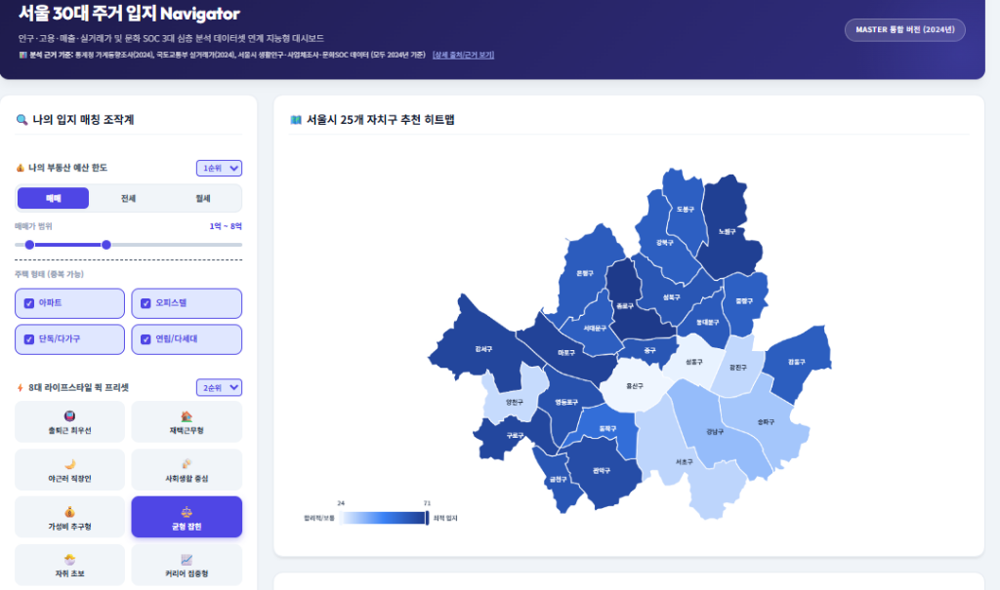

단순 가격 비교를 넘어선 데이터 기반 맞춤형 정주 여건 솔루션
130만 건의 공공 데이터가 당신의 최적 주거지를 찾아드립니다.
30대 1인가구가 직면한 삶의 질 한계와
다차원 융합 가설 설정 — 개인화된 정주 만족도 실현의 출발점
| 항목 | 시사점 |
|---|---|
| 음식·숙박 | 대체 인프라(도서관 등) 필요 |
| 주거·광열비 | 월세 경직성 방어 필수 |
| 교통비 | 직주근접으로 고정비 절감 |
2024년 기준 130만 건의 다종 데이터셋 수집 및 정합성 설계
실거래가, 생활인구, 공간 인프라의 기준 좌표 통합 여정
| 데이터셋 명 (출처) | 레코드 수 | 핵심 변수 및 피처 (Feature) | 역할 |
|---|---|---|---|
| 📈 국토교통부 실거래가 아파트·빌라·오피스텔 전월세 |
726,733 | 거래금액, 보증금, 전용면적, 월세, 주택유형, 자치구 | 예산 필터 |
| 🚶 서울 생활인구 (열린데이터) 서울시 동별 시간대별 체류인구 |
569,856 | 행정동 코드, 시간/성별/연령대별 인구, 30대 체류 인구 | 직주 스코어 |
| 🏘️ 1인가구 거처 (통계청) 거처 유형별 가구 현황 |
1,009 | 연령대, 거처 종류별 가구수 (아파트/빌라/오피스텔 등) | 거주 분석 |
| 🏛️ 여가/문화 인프라 위치정보 공원·도서관·체육시설·미술관 |
1,514 | 자치구, 시설구분(체육/공원/도서관 등), 위도·경도 | 인프라 매칭 |
대용량 데이터의 정교한 결측/이상치 제어 및 피처 생성 로직
노이즈 제거를 통한 알고리즘 정규화 신뢰도 보증
(거래금액 / 전용면적) × 3.3 (단위: 만원). 30대 타겟 변수화: 30~34세 + 35~39세 인구 컬럼 합산 처리.| 항목 | 최종 건수 | 변화 |
|---|---|---|
| 실거래가 | 726,651건 | -82건 (이상치) |
| 생활인구 | 569,856건 | 그대로 |
| 거처 현황 | 1,009건 | 그대로 |
| 여가 인프라 | 1,514건 | -17건 (중복) |
탐색적 데이터 분석(EDA)으로 도출한 서울 청년 정주의 4대 실태
거처 · 금융 · 직주 · 인프라 데이터가 말해주는 현실
| 구분 | 자치구 | 평균 보증금 |
|---|---|---|
| 상위 1위 | 서초구 | 72,156 만원 |
| 상위 2위 | 강남구 | 70,684 만원 |
| 하위 24위 | 강북구 | 19,500 만원 |
| 하위 25위 | 금천구 | 15,200 만원 |
| 자치구 | 주간 비율 | 유형 |
|---|---|---|
| 강남구 | +166%↑ | 업무지구 |
| 서초구 | +151%↑ | 업무지구 |
| 관악구 | 야간↑ | 베드타운 |
| 강서구 | 야간↑ | 베드타운 |
웹 브라우저에서 조작하는 인터랙티브 주거 Navigator v2.0
실제 로직 구현체 시연 및 3단계 스코어링 수식의 적용

정제 데이터가 플랫폼의 실제 비즈니스 가치로 변모하는 순간
주거지 매칭 플랫폼의 생존을 결정지을 3대 실무 전략
프로토타입의 단기 시장 안착 및 중장기 AI 기술 결합 로드맵
사용자 피드백 중심의 UX 개선 및 실시간 전세가율 API 연계 전략
| 단계 | 비즈니스 시나리오 (Why & How) | 액션 플랜 | 핵심 KPI |
|---|---|---|---|
| 1단계 (단기) | 완성된 8대 프리셋 & 미세 슬라이더 대시보드의 초기 시장 안착. 실사용자 UX 테스트 필요. | 피드백 수집 → 개인화 알고리즘 민감도(Sensitivity) 미세 조정 → UX 허들 제거 | 이탈률 -15% 만족도 90% |
| 2단계 (중기) | 빌라/오피스텔 거주의 전세사기 불안 해소를 위한 금융 모듈 고도화 필요. | 서울시 실시간 전세가율 API 연동 → 리스크 조기 경보 위젯 탑재 → 보증보험 연계 | 전환율 +25%↑ (개발/데이터팀) |
| 3단계 (장기) | 물리적 거리를 넘어 실제 대중교통 노선망 기반의 실 소요 시간 최적화 요구. | 머신러닝 통근 최적화 AI 엔진 탑재 → B2B 부동산 제휴 확장 → MAU 폭발적 성장 | MAU +45%↑ (R&D 부서) |
서울시 30대 1인가구의 안전하고 쾌적한 주거 의사결정을
다차원 데이터 네비게이션으로 실현합니다.